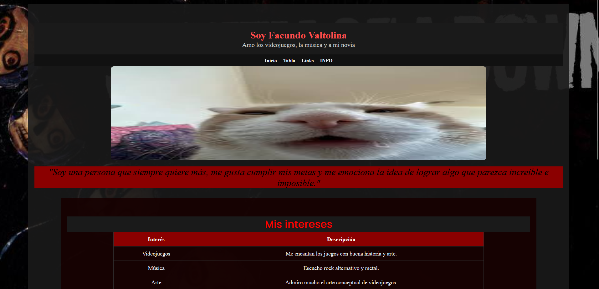

Mi Blog Personal
Primer proyecto creado dentro de la univerisad. Es simple y funcional, mara un punto de partida dentro de la carrera.
EntrarPrimer proyecto creado dentro de la univerisad. Es simple y funcional, mara un punto de partida dentro de la carrera.
EntrarJuego completamente hecho con HTML, CSS y JavaScript. Es un juego de preguntas y respuestas sobre Dark Souls.
EntrarUna pagina estilo Linktree, donde se pueden encontrar mis redes sociales y proyectos. Comoda para redes sociales
EntrarCatalogo Dragon Ball junto con sus analisis.
Entrar